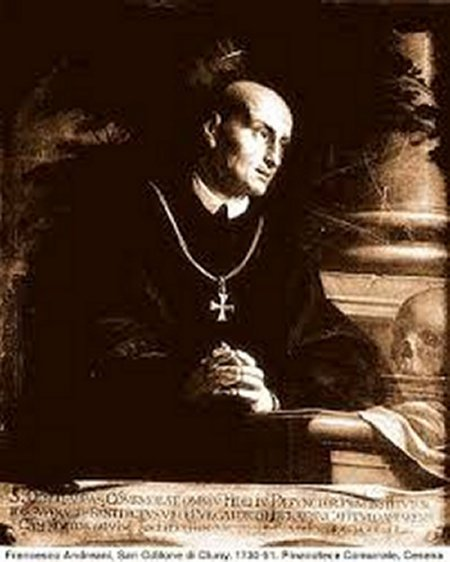
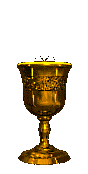

"SANTO ODILON DE CLUNY"

"RELIGIOSO FIEL A SANTÍSSIMA VIRGEM MARIA, MUITO RESPEITADO E APLAUDIDO POR SUA IMENSA E ADMIRÁVEL OBRA, QUE UNIU MAIS DE 1.000 MOSTEIROS E CASAS RELIGIOSAS PELA REGRA DE SÃO BENTO EM TODA EUROPA, GRANJEANDO-LHE A DENOMINAÇÃO DE ARCANJO DOS MONGES"


=ÍNDICE=

- DIA DAS ALMAS + MORTE + CANONIZAÇÃO